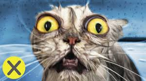
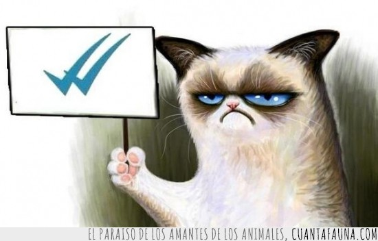

Sr. Bigotes

Si te interesan los gatos tal vez sepas ALGO SOBRE EL AMOR (sin saberlo).
CON UN GATO APRENDES qué nadie es dueño de nadie, qué todos tienen su tiempo, qué a quién quieres te puede lastimar, aprendes cuánto vale que te elijan y el trabajo que lleva conquistar.
LOS GATOS TE OBLIGAN a comprender, a aceptar el rechazo, a ejercitar la paciencia, a perdonar y a ceder.
DESCUBRES EL PLACER de someterte a un capricho, de sentirte una presa y de jugar al esclavo.
Si viviste con un gato quizas puedas resignar lo material, compartir tu espacio y percibir la diferencia entre el carácter y la apariencia.
UN GATO INOCULA soledades, esperas, silencios y ausencias.
Te hace querer QUE CONSIGAS QUE TE QUIERA.
EXIGE respeto, atención y distancia.
Tarde o tempreano te hace saber que con el amor NO ALCANZA.
TEN UN GATO Y SIENTE EL PODER.

respetar las zonas al rededor de las cuales el gato organizasu vida, ayudara a evitar transtornos de comportamiento
Mantener una rutina de visitas periódicas permitirá un correcto plan de control y seguimiento para la salud de la mascota.
Los gatos suelen deambular por todo el hogar y las calles pero su curiosidad puede serles fatal.
Conocer las necesidades nutricionales particulares de los gatos , dar una alimentación acorde a su edad , estilo de vida y necesidades específicas, por ejemplo los nutrientes que debe consumir un gatito bebe no son los mismos que un adulto.
 | Alimentos Prohibidos | Alimentos Recomendados |
|---|---|
| Huesos | Brocoli |
| Balanceado para perros | Acelga |
| Uva | Queso |
| Leche | Carnes |
| Frutas Citricas | Pollo (sin piel) |
| Pezcados con espina | Huevos |